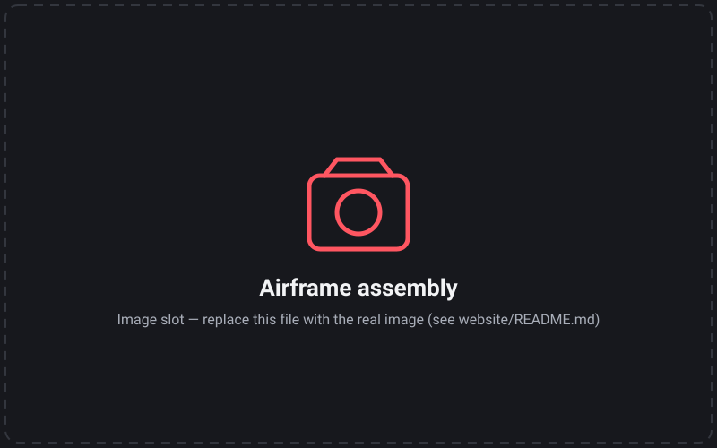
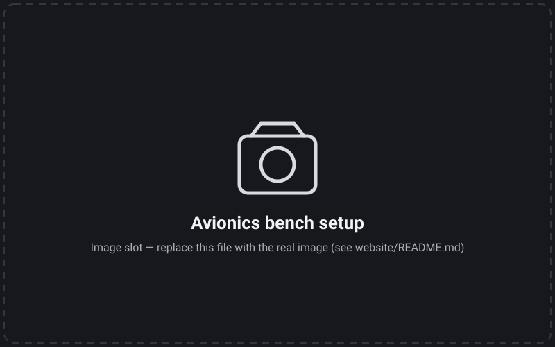
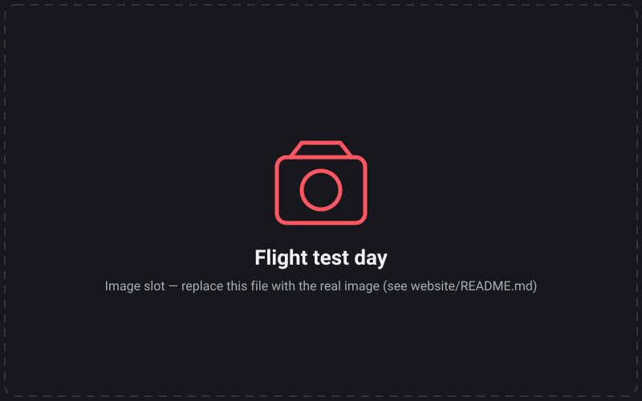
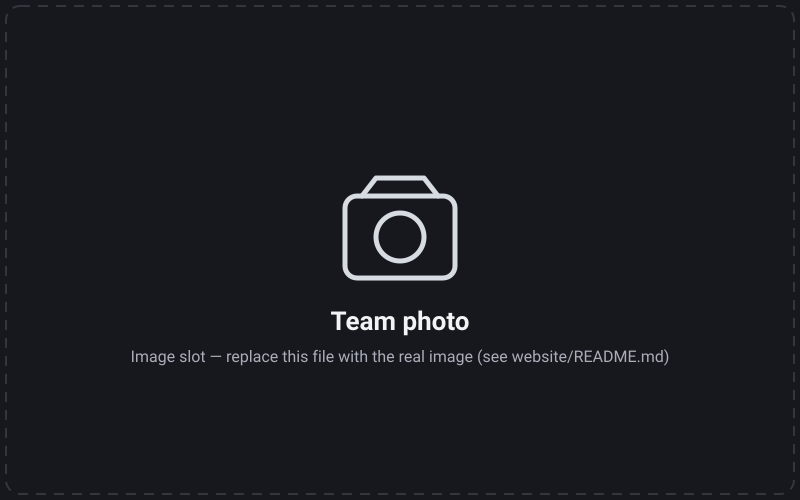

Galeri
Medya
Atölyeden, tezgâhtan ve sahadan foto ve videolar. Galeri her günlük kaydıyla büyür — aşağıdaki alanlar kampanyanın kilometre taşlarına ayrılmıştır.
Fotoğraflar
Atölyeden uçuş hattına



gogebakan modeli özelleştirilmiş
baylands_suas dünyamızda, görev waypoint'leri yüklü.


Videolar
Hareketli kareler, hareketli kilometre taşları
Gazebo görev simülasyonu
Ayrıldı — Gazebo görev screencast'i
Görsel servo ile bırakma
Simülasyon klibi — sıradaki günlük kaydıyla
Videolar YouTube kanalımızda yayınlanacak ve buraya gömülecek.
Medyamızı kullanmak
Basın, sponsorlar ve diğer takımlar bu sayfadaki foto ve videoları "Muninn UAV" kaynak gösterimiyle kullanabilir. Tam çözünürlüklü orijinaller için bize yazın.